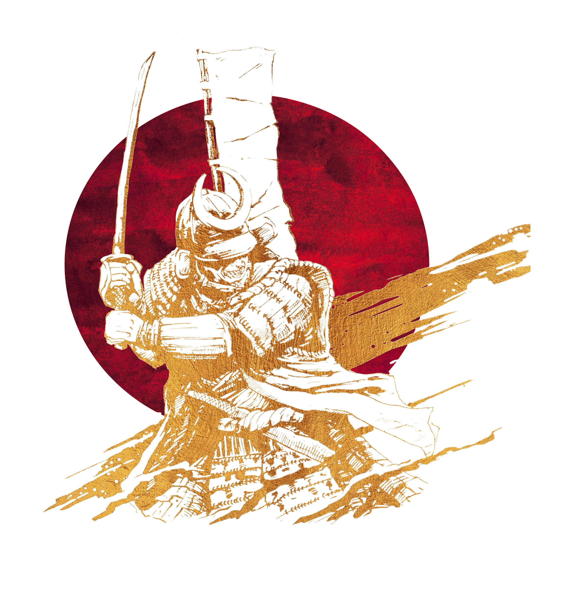

History of
The Great
Samurai

Samurai (侍) were the hereditary
military nobility and officer caste of
medieval and early-modern Japan
from the late 12th century to their
abolition in 1876. They were the
well-paid retainers of the daimyo
(the great feudal landholders).


History
This is the history period of Samurai in Japan, they live in some period
and conquer
and protect Japan from invasion.
- Asuka and Nara periods
Following the Battle of Hakusukinoe against Tang China and Silla in
663 AD, which
led to a retreat from Korean affairs, Japan underwent
widespread reform. One of the
most important was that of the Taika
Reform, issued by Prince Naka-no-õe (Emperor Tenji) in 646.
- Heian period
In the early Heian period, during the late 8th and early 9th
centuries, Emperor Kanmu sought to consolidate
and expand his rule
in northern Honshū and sent military campaigns against the Emishi,
who resisted the
governance of the Kyoto-based imperial court.
- Late Heian period, Kamakura Bakufu
The Kamakura period (1185-1333) saw the rise of the samurai under
shogun rule as they were
"entrusted with the security of the estates"
and were symbols of the ideal warrior and citizen. Originally,
the
emperor and non-warrior nobility employed these warrior nobles.
- Ashikaga shogunate and the Mongol invasion
The Mongol invasions of Japan took place in 1274 and 1281 CE when Kublai Khan
(r. 1260-1294 CE) sent two huge fleets
from Korea and China. In both cases, the Japanese,
and especially the samurai warriors, vigorously defended their shores
but it would be
typhoon storms and the so-called kamikaze or 'divine winds' which sank and drowned
countless ships and men,
thus saving Japan from foreign conquest.